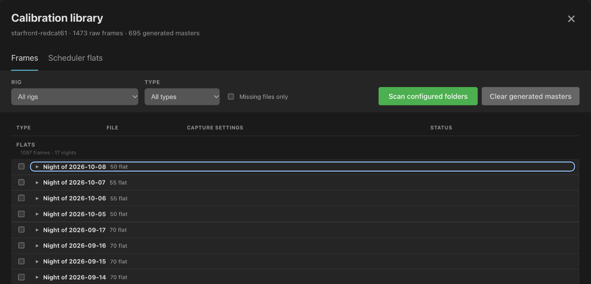
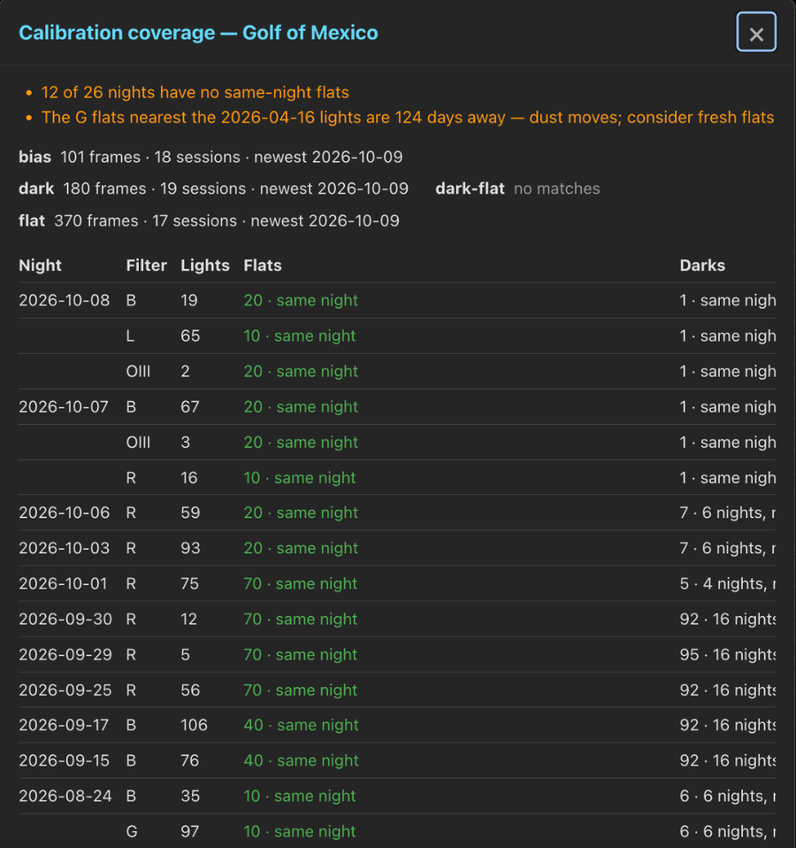
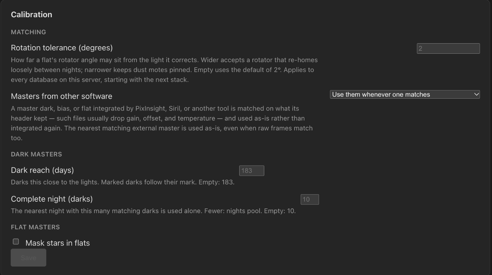

Calibration Libraries
Catalog bias, dark, dark-flat and flat frames beside the lights they serve. PSF Guard matches them conservatively, builds masters when a stack needs them, and leaves the raw frames where they are.
Import reads headers only. Stacks, WBPP runs and exports then take the matching frames.
Add calibration frames
- In Settings → Databases, add the folders that hold the calibration files to the catalog's image directories.
- Run Import. Choose Calibration only to skip lights, and check the dry preview before applying it. Creating a database and the CLI use the same header-only scan, and automatic import can take new calibration frames on a schedule; see Import Images.
- Back in Settings → Databases, click Manage on the database's calibration summary to see coverage by rig and frame type.
PSF Guard sorts frames by their IMAGETYP header:
| Library type | Header values |
|---|---|
| Bias | BIAS, OFFSET |
| Dark | DARK |
| Dark flat | DARK FLAT, DARKFLAT, FLATDARK |
| Flat | FLAT, TWILIGHT FLAT |
Twilight flats stay in the calibration library during folder imports and remote uploads. They never become light rows or exposure templates that could sync back to Target Scheduler. Masters from other software import too; see below.
Calibration records live in PSF Guard's own tables inside the catalog. Pixels do not: records point at the raw files, and generated masters live in the calibration masters folder. Reading an untouched Target Scheduler database creates no tables, and a dry run rolls its changes back.
Manage the library
A rig is the telescope, camera, sensor size and binning. N.I.N.A. profile IDs are recorded beside it, so a copied database carries its calibration library without tying it to one machine.
The Calibration library dialog filters by rig and type, and Missing files only shows paths that no longer exist. It groups frames by night, one row per night until expanded, with flats and dark flats in one section and darks and bias in their own. With database management, it can:
- Scan configured folders again;
- Forget a wrong record, or Forget night for a whole night, without deleting any FITS file;
- Clear generated masters, keeping every raw frame and record.
Forgetting a frame drops every master built from it, and every master built from those. When a frame turns up at a new path with the same kind, file name and capture time, its record follows the file and keeps its marks and masters.

Date frames by night
Flats, darks and bias are dated by the night they belong to, in the library, the coverage report and export folders. A night splits where the catalog's lights are never captured, as in Sky Coverage, so dusk and dawn flats share the date of the night between them. Rigs west of Greenwich no longer see dawn flats a day late. A catalog with no lights splits at noon UTC.
Mark where calibration stops being valid
Nearest in time is the right default, but it cannot know about a dust cleaning or a re-spaced imaging train. Select one or more nights in the library and mark their frames usable only for lights after them (a set shot right after the change) or only for lights before them (the last set before it). Matching never takes a marked frame across its boundary. Marking the same frames in both directions again clears the mark. Marks survive rescans and sync with the library.
Check coverage for a project
Click Calibration on a project's full card in the Library. The report uses the same matcher as a stack, so it shows what would apply, not just what files exist.
- Per kind: how many frames match, how many sessions they span, and the newest.
- Per night and filter: the flat set a master would use, how far it is from the lights, and whether the night has its own flats.
- The dark column shows what one dark master would use: its frames, the nights they span, and the nearest night's distance. Hover for every matching dark within reach.
- A night with no flats names the nearest flat refused only for its rotator angle, how far off it is, and the limit. That is the usual cause when a rotator moved.
- Masters from other software that fit the lights' camera and sensor
size (and filter, for flats) are listed under the night: used, matching
but not used, or not used with the readings that disagree, such as
rotation light=92.6deg master=94.7deg.
Warnings name kinds with no matches, nights without same-night flats, and flats more than a month from their lights.

Safe matching
A calibration frame must agree with every setting the light records. If the light records a value and the frame does not, they do not match. A frame with no known camera name or sensor size never matches.
| Master | Must agree |
|---|---|
| Bias | Camera, dimensions, channels, binning, gain, offset, readout mode, Bayer layout |
| Dark | Bias fields; exposure within the larger of 0.1% or 0.05 s; temperature within 3 °C; shot within the dark reach of the light |
| Dark flat | The flat's sensor settings, exposure and temperature |
| Flat | Bias fields, filter, telescope, focal length within 1 mm, and rotator angle within the rotation tolerance (2° by default) when both record it |
The readout mode counts however the driver spelled it. N.I.N.A. writes a
name such as Extend Fullwell 2CMS; PSF Guard compares names
ignoring case, so a High Gain dark never serves an Extend Fullwell light.
Frames in one master must also agree with each other: temperatures within 1 °C, and flats from one session, shot within a day of each other. The nearest group with enough frames builds the master, up to 64 frames. Before integrating, Seiza checks the inputs again and leaves out any it will not accept, such as a frame filed under the wrong filter, camera or readout mode; the stack warning names them.
Settings → Setups → Calibration sets the Rotation tolerance (degrees) for every database on the server, starting with the next stack.

Dark masters
Darks keep for months, so a dark master can draw on several nights. It uses the nearest complete night of darks alone. When no night is complete, it pools the nights within reach, nearest first. Two settings under Settings → Setups → Calibration → Dark masters bound this:
| Setting | Default | Effect |
|---|---|---|
| Dark reach (days) | 183 | A dark shot further than this from the light does not match, so darks six months away no longer serve. A dark marked for lights before or after it follows its mark instead, however old. |
| Complete night (darks) | 10 | The nearest night with this many matching darks is used alone. With fewer, nights pool. |
Darks that caught stray light
A dark shot while light reached the sensor, such as dawn through an open roof or a cap left off, has the right headers, so header matching accepts it. Its pixels sit above the bias, often more with each frame as the sky brightens. Clipping drops the worst frame but keeps the milder ones, and the master then pushes every light's sky below zero and carves a bowl that later shows as colored corners.
PSF Guard measures each raw dark and dark flat once in the background, after the server starts and after each import. It compares each frame with every frame that could stand in for it, from any night, and marks one more than one noise sigma above the quietest as Stray light. A marked dark stays out of stack masters, WBPP runs and exports, and reports name the frames left out. Nothing is deleted. A lone frame with nothing to compare against stays in use.
Masters from other software
A master bias, dark or flat from WBPP, Siril or another tool imports like
any calibration frame. A master IMAGETYP or an
NCOMBINE card marks it, and the library shows a
Master badge. PSF Guard uses it as-is, never integrated
again.
- Matching is lenient, since such files often drop gain, offset and temperature: what both sides record must agree, and the camera name or sensor size must still match. A dark's exposure must still match. The stack report names what the match took on trust.
- A master dark that records no sensor temperature, such as one from WBPP, calibrates cooled lights.
- WBPP's FITS masters are floats scaled 0 to 1. PSF Guard copies such a master into its cache once, on the same 16-bit scale as every other frame. The original is never written to.
Masters from other software, under Settings → Setups → Calibration, decides how they take part: Use them whenever one matches (default), Only when raw frames cannot build one, or Never.
Calibration in stacks
The Calibration control in Stacks has three modes:
| Mode | What it does |
|---|---|
| Auto | Default. Applies only masters whose matching and dependencies are safe. |
| Force on | Applies every master that can be built, including a flat with no trusted pedestal. The card warns about the risk. |
| Off | Skips matching and stacks the raw lights. |
The project-wide choice is saved, and each channel card can override it. A stack whose lights need different flats or darks splits into calibration sessions and swaps masters between them; the card reports the session count. Calibration runs on raw CFA data before debayering.
Flats
A flat divides correctly only after the light's pedestal is removed. A bias or dark master does that. With flats only, PSF Guard fits the pedestal from the lights when the field has enough vignetting and the estimate passes its checks; the card reports the fitted value. When the fit is not trusted, Auto leaves the flat out and says to import bias or dark frames.
A flat master gets a defect pass after integration: a hot or dead pixel repeats in every flat, survives clipping, and would print into every light. Darks keep their hot pixels, since those subtract the lights' own. Lights in a session with no dark master get the same pixel filter before stacking.
Mask stars in flats, under Settings → Setups → Calibration → Flat masters, detects stars in each raw flat and leaves them out before integration. It is off by default and does not touch imported masters. Every pixel must keep at least two unmasked frames, or the flat build fails and the stack goes on without it.
Dew drying off the sensor window leaves spots that fade from one flat to the next. PSF Guard reads each new flat master back against its frames. When a minority disagree, the master rebuilds without them; when the whole set disagrees with itself, the next-nearest flat set takes its place; with no other set, the master serves and the card says to retake it.
Masters
Each master needs at least two frames. Bias and dark masters use a two-pass, leave-one-out sigma-clipped mean; flat masters use median/MAD clipping after calibrating and normalizing each frame. The FITS records the method, thresholds, frame count and rejected samples. Seiza 0.23.1 builds masters on every core.
While a master builds, the stack card and the header queue name it, what Seiza is doing, and the frame or tile under way. Stop ends a master build part way and writes nothing.
Master files are named from their input frames, file fingerprints,
upstream masters and algorithm versions, so a changed bias rebuilds the dark
and flat masters that used it, and an unchanged master is reused. They live
in the calibration masters folder, which is the cache unless
--calibration-dir or Settings → Storage →
Folders names another:
<calibration masters folder>/<database>/calibration-masters/Once an hour PSF Guard removes half-written masters and masters that a newer one built from the same frames replaced, once unused for a day and named by no stack. Over the disk limit, masters unused for a week can go too. A master whose frames are gone, or that the catalog does not record, is always kept. A removed master is built again when a stack needs it. See Disk use.
Masters on a finished stack shows the master files that stack used, with pan, zoom, a display stretch and an unchanged FITS download.
Calibrated copies
Calibrated and registered copies that WBPP, Siril, ASTAP, DeepSkyStacker and other tools write are paired with the light each came from, instead of importing as extra lights. A calibrated copy with no raw frame becomes the light until the raw arrives. Stacks still read the raw frames and calibrate them from this library. See Import Images.
Export with calibration frames
Project and target exports add, for each light, the raw frames a stack would build its masters from: the nearest coherent set of each kind, not everything the library matched. Darks marked for stray light stay out.
- Flats stay under their target and under the night they were shot, since two nights of one target can need different flats.
- In the WBPP layout, each light's path names its night, so each night's lights calibrate with that night's flats.
- When lights of one exposure were matched to different darks, each set
of darks goes in its own
DARKSET_<night>folder, so WBPP does not average every night's darks into one master.
Layouts, options and the WBPP runner are on Export & AstroBin.
Move a catalog
Merge catalogs and sync pull copy rigs,
profile bindings, raw calibration records and validity marks. They do not
copy generated masters, whose paths belong to the source machine. The
destination finds stale raw paths by file name under its own image folders
and builds its own masters.
Troubleshooting
| Symptom | Check |
|---|---|
| No calibration summary | Add the calibration folder to the catalog, run Import, and confirm IMAGETYP names the frame type. |
| No matching master | Compare camera, size, binning, gain, offset, readout mode, exposure, temperature, filter, telescope, focal length and rotator angle. The coverage report names a flat refused for its angle. |
| A night has no flats | Open the coverage report. If a rotator moved, raise Rotation tolerance (degrees) or shoot new flats. |
| Darks from another season used | Lower Dark reach (days), or mark validity boundaries. |
| Fewer darks than expected | Look for the Stray light mark in the library. |
| Master build warning | Open the card's details for the skipped master and its cause. The stack goes on with the masters that built. |
| Flat makes edges brighter | Use Auto and import bias or dark frames. Force on can apply a flat whose pedestal was not removed. |
| Stars in a sky-flat master | Dither or let the sky drift between flats, or turn on Mask stars in flats. |
| Old master reused | Changed frames rebuild masters on their own. Use Clear generated masters only to rebuild every master. |